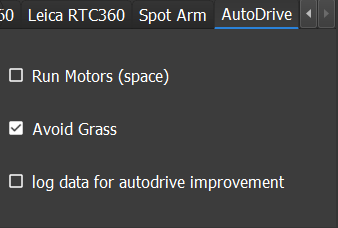
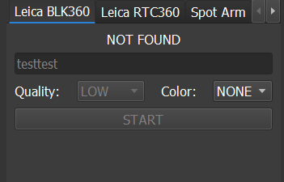
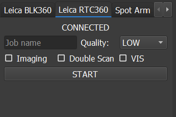
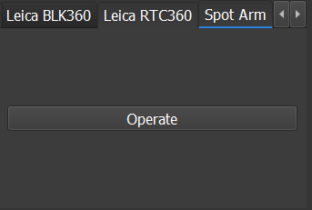

dC Pilot Client
The dC pilot is a GUI (graphical user interface) for the d.ASH SDK. It encompasses interactive visual components for you to control your robot both manually and autonomously. Operate your robots safely and precisely, from any location with our reliable and high-performance BVLOS (Beyond Vision Line of Sight) System with high quality video streams and responsive controls. This section of the d.ASH SDK documentation provides details about using the d.C Pilot Client.
1.1 Introduction
|  |
|
The pilot client allows you to operate your robots safely and precisely, from any location via its high-performance Remote TeleOps/BVLOS (Beyond Vision Line of Sight) system. It is also equipped with high quality video streams and responsive controls for seamless naviation. The system can also be used for fleet management, to discover, monitor and control multiple robots anytime, anywhere with real time video streaming and data collection. You can view a quick introduction of dc Pilot here
|  |
|
The Vision AutoDrive is another key feature of the d.C Pilot, using machine learning and computer vision to analyze and understand your robot's surroundings. This allows hands-free Level 2 Autonomy for the navigation of complex, unstructured environments using just cameras alone. A demonstration of what Vision AutoDrive is capable of can be viewed here
Some requirements before starting the d.C Pilot are:
- Nvidia CUDA GPU enabled PC ( At least 2 GB of GPU Memory )
- Joystick connected to the PC
- 1 GB local storage space
- 16 GB of CPU Memory
- Intel i5 CPU or equivalent
- Windows 10 64-bit OS or higher
1.2 Robot Login
When you first load up the pilot client, you will be asked to login via your user account. After authentication, you will be presented with the following screen below:
|  |
|
The screen above shows you the robots switched ON and discovered via dashBoard ( the Fleet Management System ). Any robot currently registered under your user account and is alive will be displayed. Select the robot you want and click on Take Control to proceed to control the robot. If you want to restart the robot ( due to any unforseen previously encountered issues, ), click Restart to do so.
1.3 Main Controls
|  |
|
Robot Power ON/OFF
This is an optional step depending on the type of robot you are running. For most robots the robot is automatically turned ON when you physically attach a battery ( or press the actual Power ON button/switch ). For robots that need to be turned ON via software ( like the Boston Dynamics Spot ), you should turn it on by pressing the Power ON button before piloting the robot. Similary, you can Power OFF the robot if it supports such functionality.
| Basic Manual Piloting |
|---|
| To start the robot from rest, apply pressure on the joystick. |
| To stop the robot from moving, release your hold on the joystick. |
| To move the robot forwards, push front on the joystick. |
| To move the robot backwards, pull back on the joystick. |
| To turn the robot to the left, tilt left on the joystick. |
| To turn the robot to the right, tilt right on the joystick. |
To get the robot to stand or sit ( if the Robot supports it ), click the stand or sit button under the Basic Control panel on the right side of the main screen. |
Robot Reconnection/Restart ( Connectivity issues )
If you encounter situations where you lose connection to the robot ( or encounter unstable video/control streams ), you should consider Restarting/Reconnecting with the robot. There are 2 options available:
|  |
|
- Reconnect: This issues a fast reconnection between the pilot client and the robot. Run this if you suspect there was issue with connectivity between the client and the robot.
- Full Restart: This will flush + restart the robot system, then reconnect the client to the robot when the robot system is ready. Run this if you need to do a full restart with the robot possibly due to issues other than connectivity.
1.4 Control Panel
| Control Panel |
|---|
 |
| (1) Unmute the microphone to allow dual-communication between the pilot client and the robot. |
| (2) Toggle between audio to broadcast speakers. |
| (3) Record videos in mp4 format. |
| (4) Upload/download video recordings. |
| (5) Configure settings for your preference ie. night mode. |
| (6) Broadcast live video streaming using eith a RTSP server or an HSL server. |
1.5 Basic Controls
| Component | Description |
|---|---|
 |
(1) Monitor the joystick position with respect to your robot. Control the robot by pushing further on the joystick. (2) Adjust the cruise control speed using the slider control or if your joystick has a secondary lever, push the lever to activate. (3) Activate auto-drive for your robot to switch to Smart AI Assisted Cruise Autonomy. - Use the spacebar shortcut key to activate auto-drive. - Use the z shortcut key for your robot to take the next few possible left turns. - Use the x shortcut key for your robot to return to forward position after turning left or right. - Use the c shortcut key for your robot to take the next few possible right turns. |
1.6 Cameras
| Component | Description |
|---|---|
 |
(1) Select from a list of cameras onboard Spot, which are automatically detected by the pilot client. (2) Adjust the order of cameras for a wider view scope. Ticking the flipped settings will adjust the camera orientation. (3) Click on sync to sync up the default camera layout/settings from the robot. You can also manually change the camera order via the Cameras drop-down combo box. (4) Activate human tracking for people detection and labelling. |
1.7 AutoDrive
|  |
|
AutoDrive is our state of the art ML/Computer Vision Level 2 Autonomy system for robots. It requires a calibrated 3 camera setup in order to properly function. Please make sure you have the proper setup before continuing. You can watch an overview video of what AutoDrive is capable of here
|  |
The following options/controls are available:
- Run Motors: This starts/stops the AutoDrive system
- Avoid Grass: Checking this ON/OFF will tell the system whether to make the robot avoid/ignore a grassy area during Autonomy
- Log Data: This will record any required data for sending during operation
1.7 Leica BLK360 Laser Scanner
|  |
This panel enables you to running scanning with the Leica BLK360 Laser Scanner. Please make sure the scanner is properly mounted/connected before proceeding. Run the following steps to start scanning:
- Type in your Job Name in the textbox. This name will be used for the entire set of scans.
- Select your Scan quality via the Quality combo box.
- Select whether you want Color ( None, HDR, LDR ) via the Color combo box.
- Click Start to start the scanning operation.
1.8 Leica RTC360 Laser Scanner
|  |
This panel enables you to running scanning with the Leica RTC360 Laser Scanner. Please make sure the scanner is properly mounted/connected before proceeding. Run the following steps to start scanning:
- Type in your Job Name in the textbox. This name will be used for the entire set of scans.
- Select your Scan quality via the Quality combo box.
- Check the options Imaging, Double Scan, VIS for your RTC 360. Please consult your scanner user manual for more information on what those options do.
- Click Start to start the scanning operation.
1.9 Boston Dynamics Spot Arm
|  |
This panel enables you to operate the Boston Dynamics Spot Arm if your Spot robot has been configured with one. Please take note that your cameras should be set to Spot's Default Black and White Cameras in order for this to function.
- Click Operate to start the Arm operation
- This will pop up a separate window that shows the black and white cameras on Spot.
- Click on the desired target area to run the arm manipulation operation.
- Click Run to start the arm operation.